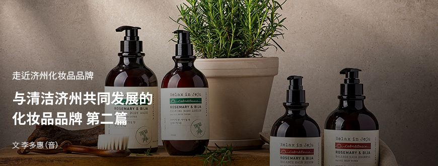
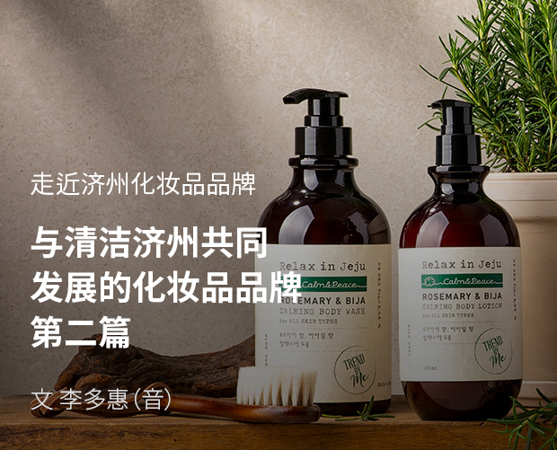
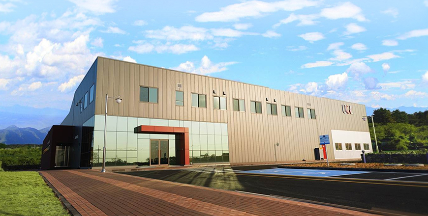
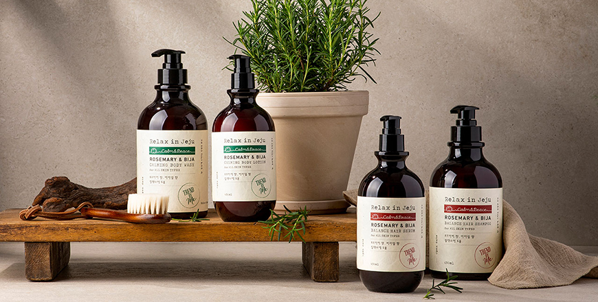

기획취재콘텐츠
- Home
- 제주라이프
- 기획취재콘텐츠
与清洁济州共同发展的化妆品品牌 第二篇새로운 글




为济州化妆品产业奠定基础——UCL
UCL于1980年以化妆品原料专业企业起家，目前是韩国的代表性化妆品OEM与ODM企业。1995年，ULC在仁川南洞工业园建成CGMP（Cosmetics Good Manufacturing Practices，优秀化妆品制造及品质管理标准，以下简称“CGMP”）工厂，随之扩宽业务领域，成为韩国化妆品OEM与ODM行业的第一代企业。
UCL很早就认识到济州岛拥有得天独厚的自然环境和丰富多样的生物资源，最适宜发展化妆品原料产业，拥有巨大价值，故而2011年就在济州科技园中央研究所设立济州分所，开始进军济州。2013年UCL在济州市涯月邑於音里设立工厂并通过CGMP认证，目前年产量接近3000万支。UCL济州工厂是济州道内唯一通过CGMP认证的民营化妆品厂商。

- UCL济州生产工厂全景 ⓒUCL -
- ISO认证书（左）、CGMP济州认证书（中）、品质管理体系认证书（右） ⓒUCL -
UCL济州研究所专业研发低刺激、高功能的自然主义产品，如天然化妆品、有机化妆品、纯素化妆品等，致力于利用济州蓼兰、绿茶、芦荟、箬竹、马油、马尾藻、腔昆布、裙带菜等当地海陆生物资源，研发、生产天然化妆品原料。仅化妆品组合物专利就超过20项，其中包括济州玄武岩粉末组合物、蓼兰提取物、积雪草提取物、山茶油组合物等。
UCL不断展开研究，寻找济州独有的材料（Only in Jeju）和效果更佳的在地材料（Better in Jeju），用于各种化妆品剂型。因济州材料而备受关注，这便是济州的故事。在化妆品品牌推广过程中，能打动消费者的故事非常重要。‘济州制造’化妆品自带独特的济州自然故事，而将故事推向全球市场并广泛宣传其价值，对赢得全球市场至关重要。
2007年，UCL率先在韩国采用M-ODM（Merchandising&ODM，以下简称“M-ODM”）模式，即产品策划生产模式ODM与营销支持相结合的一种全新研发模式。UCL提供一站式解决方案，包括从寻找化妆品原料到开发化妆品、挖掘独特故事、策划化妆品理念、开展市场营销，直到化妆品产品问世。M-ODM式品牌开发以化妆品技术市场上水涨船高的先进技术实力为基础，加上打动消费者的“品牌推广”，进而不断提高化妆品制造业的附加值。
- UCL化妆品研究所内部 ⓒUCL -
截至2020年3月，UCL生产的150多款产品通过了济州化妆品认证制度（JCC: Jeju Cosmetic Cert）认证。目前，UCL还与知名化妆品品牌合作开发济州本土原料，用于生产优质化妆品，如LG生活健康Beyond利用济州谷物和山茶油提取物开发Phyto Moisture系列、UNIQUEMI利用火山岩泥开发发酵面膜、CJ欧利芙洋利用济州山房山碳酸温泉水和济州鲜植混合物（柠檬、仙人掌果、山茶花、油菜花蜜）开发植物王国济州碳酸水洁面系列等。

- 添加济州产迷迭香和榧树叶提取物的美体护发品牌“Relax in Jeju" ⓒUCL -
此外，UCL还利用济州化妆品原料打造了自有化妆品品牌系列。其中，济州自然主义化妆品品牌“爱珂捷”利用济州黑萝卜、蓼兰、海草等济州原料的提取物，推出了美白、抗衰老等七大基础与功能性化妆品系列。UCL以济州丰富的生物资源为基础，将与众不同的故事融入产品中，不仅吸引了济州游客和韩国消费者，还在越南和泰国等海外市场获得良好反响。另外，UCL还从济州迷迭香和榧树叶中提取精油，开发天然香料，推出头发和身体护理品牌"Relax in jeju"，顺应家庭SPA潮流，打造高端家庭SPA品牌，进一步拓展市场。